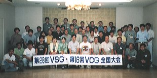
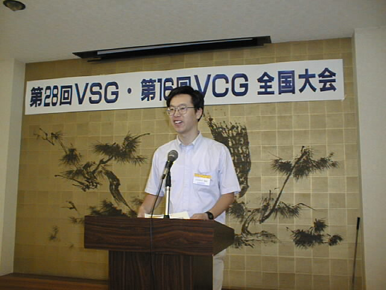
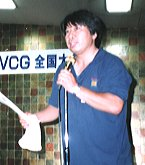
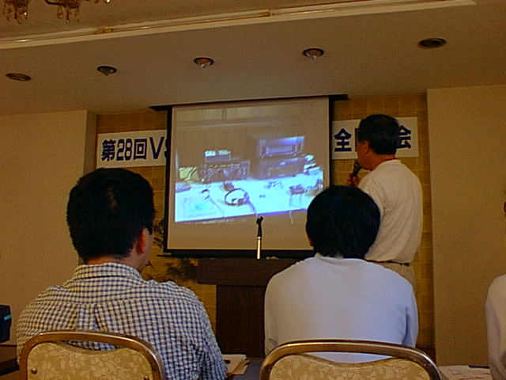
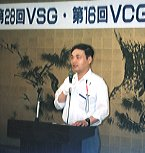
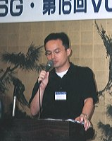
【'98 VSG/VCG・全国大会・参加者】
JA1MVK JO1NXP JE2WLD JA3QVQ JA4NUE JE6NVJ JA7WSZ JE8KIH/1 JA9BHZ JH0IEF
JA1RJU JP1VOC JG2TSL JF3AGW JA4TOH JH7VEP JR8WWZ/1 JA9CGR JH0RNN
JA1VOK JQ1BVI JI2NSR JG3RGG JE4BTR JK7IKU JH9CYY JH0RNL
JE1NCP JQ1HBT JK2GFX JE4TRE JE9BHE JR0QFA
JE1TGN JR1ERU JR2HCB JG4BLW
JF1KKT JR1ETY JG4NDR
JG1BJF JR1VLU JH4MFD
JJ1RPJ 7L1QWK JL4GTO
JK1BEY 7N1MPW JN4CIW
JL1ABP 7L2TYE
JL1GHQ
JM1AEO
JM1WDJ
JM1XYW
第28回VSG･第16回VCG全国大会実行委員会
実行委員長 竜沢 信(JJ1RPJ)
皆様におかれましては、太陽黒点数の上昇に伴い活発にご活躍の事と思います。 この度山梨県で
「第28回VSG･VCG全国大会」を開催することになりました。
不慣れな点など多々あると思いますが、心からお待ち申し上げております。
《ごあんない》
● 日 時 1998年9月12日(土)
15:00〜 受付開始
18:00〜 前夜祭開催
9月13日(日)
08:00 当日参加者受付
09:00 ミーティング
13:00 解散予定
● 場 所 湯村グランドホテル
〒400-0026 山梨県甲府市塩部2丁目16−20
TEL:0552-53-4151(代)
● 会 費 前夜祭に参加して宿泊する場合 -- 土・日曜日通 -- 16.000円
前夜祭のみ参加(宿泊無し)の場合 --土曜日のみ-- 12.000円
当日13日のみ参加の場合 --日曜日のみ-- 3.000円
● 送 金 送金は、郵便振替をご利用下さい｡
口座番号 [00260-4-86237]
振替先加入者名 [VSG全国大会]
送金は8月15日(土)までにお願いします。例年より早めに締めますのでご注意願います。
以後はご面倒ですが現金書留にてお願いします。キャンセルの場合、会場の都合により、9月6日(金)までは
事務経費を差し引きの上、会費の払い戻しを致しますが、9月5日(土)以降は払い戻しが出来ませんのでご了
承下さい。
現金書留送付先：〒400-0306 山梨県中巨摩郡櫛形町小笠原３４ 長沼克彦 宛
※いずれの場合も、送金者の住所/氏名/電話番号/ｺｰﾙｻｲﾝ（同行者も）を正確に
ご記入下さい。（入金確認後、折返し、領収書・案内図・葉書等をお送りします）
● 備 考
※ご家族等で参加される方で、同室をご希望の場合、事前にお知らせ下さい。
● 問い合わせ先（緊急の場合を除き、電話での連絡はご遠慮下さい）
大会会長 JJ1RPJ 〒400-0126 中巨摩郡敷島町大下条438-10 竜沢 信
(e-mail:VZM02414@niftyserve.or.jp)
事 務 局 JL1ABP 〒400-0306 中巨摩郡櫛形町小笠原34 長沼 克彦
(e-mail:jl1abp@mxc.meshnet.or.jp)
【第20回KSSG(熊本大会)参加者】 JA6BCK JA6RJK JE6HJT JR6LGF JA6FEU JH6QQM JA1RJU JM6EBU JA6IMJ JF6TAC JA1VOK JH6EBC JA6LNJ JH6WFV JE1BMJ JA6QGG JA6LZG JR5EPQ JA6TEW JA6SNV JH7VEP JH6BPG JH6VXP JA6BI JE6HEF JH6XYJ JA6JZE JK6PAC JR6JDZ JA6WFM JM6ECZ JA6RGD JH6GZB
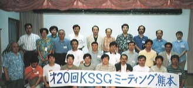
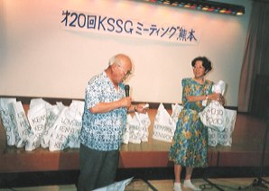
【第27回6SG秋田(横手市)大会参加者】
JA1CJB JO1KBC JA7EIQ JE7CAI JH7CRL JH7VTE JR7EXS
JA1DWQ JO1PSX JA7FEX JE7GWN JH7JGM JI7NAI JR7SIF
JA1RJU JO1XCO JA7KDZ JE7SMV JH7LLE JI7NBW JA8CRB/7
JI1NJC JP1HAU JA7KHQ JE7XVF JH7LVH JI7WTK JH0RNN
JJ1LGO JP1MQZ JA7MIT JF7NNX JH7MQU JJ7QWY
JK1BEY JR1LZK JA7QPB JF7REV JH7OHF/1 JK7IKU
JL1ABP JA7AGL JA7QVI JF7UNR JH7QLS JK7OSL
JL1IHE/7 JA7AHK JA7WGB JF7WTI JH7UPW JL7IWF
JL1PND JA7BZU JA7WSZ JG7BBO JH7UXH JL7QDP
JN1IME/0 JA7CSS JA7XBA JH7BRY JH7VEP JL7RFQ
（順不同・他に当日参加者あり）
【JA1RJU・小笠原 一夫】
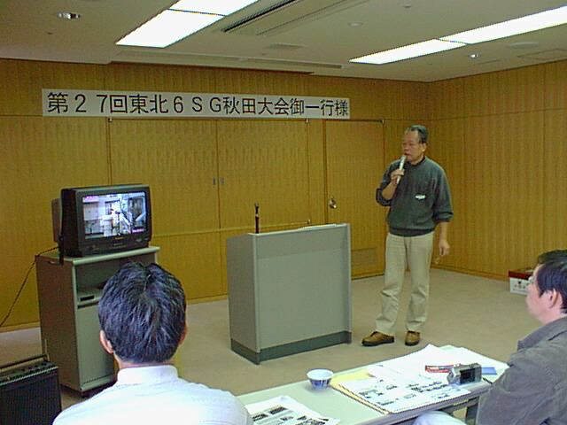
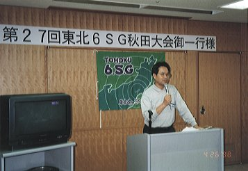
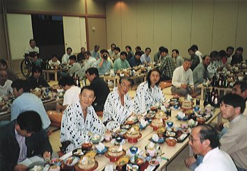
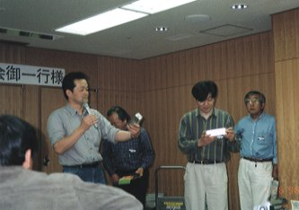